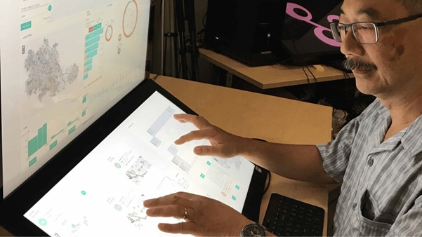

Professor B L William Wong has dedicated his work to a single compelling question: how do we design technology that makes humans think better?
A world-leading researcher in Human-Computer Interaction (HCI) and cognitive engineering, currently based at Auckland University of Technology (AUT) New Zealand, SLIIT proudly counts Professor Wong among its global Honory Professor Network.
With an academic career spanning over 34 years, his expertise sits at the intersection of cognitive systems engineering and interface design, creating visual analytics tools and AI-powered socio-technical systems. These tools enhance situation awareness, sense-making, and decision-making in high-stakes, dynamic environments.
The centrepiece of Professor Wong's international research career is VALCRI — Visual Analytics for Sense-making in Criminal Intelligence Analysis — a landmark €16.5 million EU FP7 project he coordinated. The project brought together 72 scientists, engineers and law enforcement professionals from 18 institutions across Europe, the UK and the US, backed by €13.1 million in EU funding.
VALCRI set out to build the next generation of criminal intelligence analysis systems, combining visual analytics with AI to create what the team called a "Reasoning Workspace" — an environment designed to augment an analyst's ability to detect patterns, generate hypotheses, and make rigorous decisions under conditions of deep uncertainty.

The project tackled profound design challenges, specifically- how do you make algorithmic reasoning transparent rather than opaque? How do you support an analyst's creative, intuitive thinking while enforcing rigour? And how do you embed ethics, privacy and legal accountability into a system that could impact people's lives? VALCRI's intellectual property was subsequently commercialised through Genetec Inc., demonstrating the project's real-world impact.
Professor Wong served as Consortium Coordinator for the UK Visual Analytics Consortium. Jointly funded by the US Department of Homeland Security and the UK Home Office, this project developed visual analytics techniques for complex sense-making using large-scale open-source data.
He developed a novel 4D spatial-temporal energy trajectory (4DET) display for flight deck energy profile management — a tool designed for the air traffic control environments of the future.
Professor Wong also designed visual analytics solutions to support network-security situation awareness, helping information officers and network administrators detect and respond to threats in real time.
At AUT's Data Science Research Centre, Professor Wong continues to push the boundaries of human-AI collaboration. His current focus is on designing visual analytics-based socio-technical systems that use AI and machine learning to create effective human-AI teams — a challenge that is reshaping industries from law enforcement to healthcare and national security.
He also actively supervises PhD students in HCI, with research centred on cognitive task analysis, ecological interface design, and representation design for decision support in complex, dynamic environments.
What This Means for SLIIT
Professor Wong's appointment as an Honorary Professor in SLIIT's network brings exceptional depth to the institution's engagement with human-centred computing and AI. As Sri Lanka's technology sector grows and as organisations here navigate increasingly AI-augmented workplaces, the design principles Professor Wong champions — transparency, cognitive alignment, ethical accountability — are directly relevant.
His global network, spanning European research consortia, US defence agencies, and Australasian universities, enriches SLIIT's own research connections. For faculty and students alike, his presence in the honorary professor network signals a commitment to research that asks not just what technology can do, but how technology can make us think and decide better together.
Professor Wong's research spans the following interconnected fields: